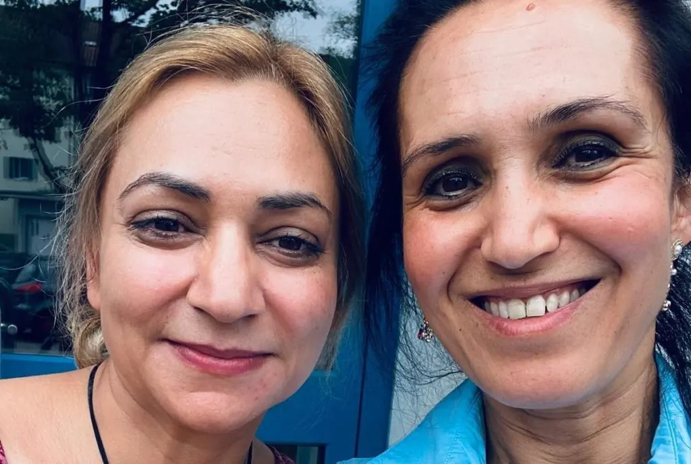
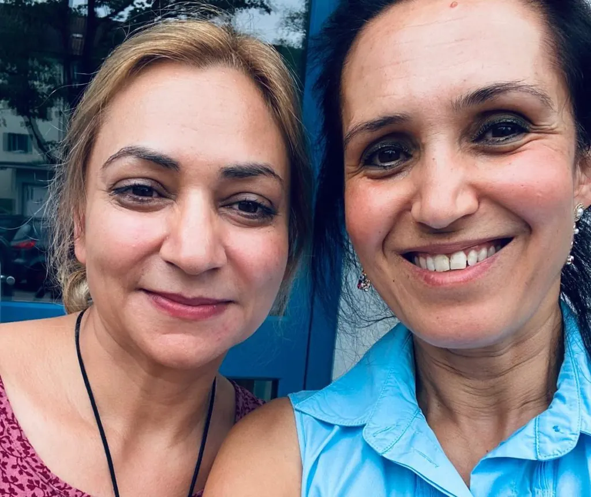

Sediqa und Lida, Mentee und Mentor bei SEET, teilen die Geschichte über Ihre Reise mit SEET.

Sediqas Geschichte
Mein Name ist Sediqa (Shabnam) Simia, und meine Geschichte beginnt im Jahr 1986 in einer von Konflikten geprägten Welt. Ich wurde in einer Zeit des Krieges geboren, und meine Familie war gezwungen, unser Heimatland zu verlassen und in den Iran zu fliehen. Dort verbrachte ich meine Kindheit und Jugend. Trotz der Unsicherheiten, die das Leben im Exil mit sich brachte, verfolgte ich meine Leidenschaft für Gerechtigkeit. Ich erwarb einen Bachelor-Abschluss in Rechts- und Politikwissenschaften und später einen Master-Abschluss in Strafrecht und Kriminologie.
Mein Weg war geprägt von Widerstandskraft, geformt durch die Herausforderungen von Migration und den unermüdlichen Wunsch nach Wissen. Doch im Jahr 2022, nach der Machtübernahme der Taliban, suchte ich Asyl in der Schweiz.
Ich hörte zum ersten Mal von SEET durch meine Schweizer Freundin Ruth Loosli, eine Schriftstellerin. Ihre Begeisterung weckte meine Neugier, und ich begann, mich intensiver mit SEETs Mission zu beschäftigen. Je mehr ich darüber erfuhr, desto mehr fühlte ich mich zu diesem Programm hingezogen. Es war nicht nur eine Initiative, die das Potenzial qualifizierter Migrant: innen anerkannte, sondern auch aktiv dazu beitrug, ihnen eine berufliche Zukunft in der Schweiz zu ermöglichen.
Für jemanden, der in einem neuen Land Fuss fasst, geht es nicht nur um Qualifikationen – es geht darum, die richtigen Möglichkeiten und ein unterstützendes Netzwerk zu finden. Genau das bot SEET: eine Brücke zwischen Erfahrung und neuen Chancen, zwischen vergangenen Errungenschaften und einer Zukunft voller Möglichkeiten. Inspiriert von dieser Vision, entschied ich mich, mich zu bewerben – in der Hoffnung, wieder zu meinem beruflichen Weg zurückzufinden und mich sinnvoll einbringen zu können.
Eine der bereicherndsten Erfahrungen meiner SEET-Reise war die Begegnung mit meiner Mentorin. Unsere gemeinsame Bewunderung für Hannah Arendt führte zu inspirierenden Diskussionen, doch was unsere Verbindung wirklich vertiefte, war eine noch tiefere Gemeinsamkeit: Meine Mentorin war selbst vor Jahren aus Afghanistan migriert und sprach Farsi. Dies schuf von Anfang an ein Gefühl der Verständnis und Verbundenheit.
SEET spielte zudem eine entscheidende Rolle bei der Verbesserung meiner Deutschkenntnisse – ein wichtiger Schritt für meine Integration. Meine Mentorin stellte den Kontakt zu Frau Traudi Ferguson, einer herausragenden Lehrerin aus Irland, her. Sie bot mir kostenlosen Online-Unterricht und Lernmaterialien, die mir enorm geholfen haben. Dank dieser Unterstützung erreichte ich einen bedeutenden Meilenstein: den Erwerb meines TELC B1-Zertifikats.
Neben der individuellen Betreuung bot SEET auch strukturierte Sprachkurse und stellte essenzielle Ressourcen wie Computer und Sprachbücher zur Verfügung, um uns auf unserem Weg zu unterstützen.
Für Geflüchtete ist SEET weit mehr als ein Programm für Bildung und Karriereförderung – es ist eine Lebensader. SEET hilft dabei, berufliche und soziale Netzwerke aufzubauen, erleichtert die Integration und schafft ein echtes Gefühl von Gemeinschaft.
Über die reine Kompetenzentwicklung hinaus hilft SEET den Teilnehmenden, Selbstvertrauen, Hoffnung und ein Gefühl von Normalität zurückzugewinnen. Vor allem aber stellt SEET sicher, dass sich niemand auf diesem Weg allein fühlt. SEET hat meinen eigenen Weg nachhaltig geprägt, und ich kann es jedem empfehlen, der Unterstützung, Verbindung und Zugehörigkeit.
Lidas Geschichte
Vor einem Jahr stiess ich, Lida Naeim-Jäggi, über LinkedIn auf SEET – ein Programm, das nach Mentor: innen suchte, um Geflüchtete in der Schweiz auf ihrem akademischen Weg zu begleiten. Von dem Moment an, als ich von ihrer Mission erfuhr, war ich fasziniert. Hier war eine Gruppe junger Menschen, die ihre Zeit, Leidenschaft und Energie investierten, um einen echten Unterschied zu machen. Ohne zu zögern, nahm ich Kontakt mit dem Team auf und schon bald wurde ich Teil von etwas wirklich Bedeutungsvollem.
Was als Möglichkeit begann, etwas zurückzugeben, entwickelte sich schnell zu viel mehr. Als ehemalige Geflüchtete aus Afghanistan wusste ich aus eigener Erfahrung, wie entscheidend Unterstützung und Orientierung in einem neuen Land sind. SEET bot genau das und ich war dankbar, einen Beitrag leisten zu können. Doch das tiefgreifendste Erlebnis auf dieser Reise war die Begegnung mit meiner Mentee. Sie eröffnete mir eine neue Perspektive auf Afghanistan und afghanische Frauen – eine Sicht, die ich selbst so nie erlebt hatte. Ihr freies Denken über Leben, Freiheit, Träume und Bildung faszinierte mich und erfüllte mich mit tiefem Respekt und Bewunderung. Heute bin ich SEET zutiefst dankbar nicht nur dafür, dass ich eine aussergewöhnliche Persönlichkeit kennenlernen durfte, sondern auch für die Freundschaft, die aus dieser Begegnung entstanden ist.
Unsere Gespräche waren nicht nur inspirierend, sondern auch kraftvoll sie zeigten mir, wie viel Stärke und Mut in der nächsten Generation steckt.
Sediqa and Lida, mentee and mentor, share their beautiful journey with SEET.

Sediqa’s point of view
My name is Sediqa (Shabnam) Simia, and my story begins in 1986, in a world shaped by conflict. Born during a time of war, my family was forced to leave our homeland, seeking refuge in Iran, where I spent my childhood and teenage years. Despite the uncertainty that came with displacement, I pursued my passion for justice, earning a bachelor’s degree in Law and Political Science and later a master’s degree in Criminal Law and Criminology.
My journey has been one of resilience, shaped by the challenges of migration and the pursuit of knowledge in the face of adversity. However, in 2022, after the Taliban took over Afghanistan, I sought asylum in Switzerland.
I first learned about the SEET program through my Swiss friend, Ruth Loosli, a writer. Her enthusiasm piqued my curiosity, and I delved deeper, exploring SEET’s mission online. The more I learned, the more I felt drawn to it. Here was a program that not only recognized the potential of skilled migrants but actively helped them rebuild their professional lives in Switzerland.
For someone navigating a new country, the challenge isn’t just about qualifications—it’s about finding the right opportunities and support system. SEET offered exactly that: a bridge between experience and opportunity, between past achievements and a future filled with possibilities. Inspired, I decided to apply, hoping to reconnect with my professional path and contribute meaningfully once again.
One of the most rewarding aspects of my SEET journey has been my connection with my mentor. Our shared admiration for Hannah Arendt sparked engaging discussions, but what truly strengthened our bond was something deeper—my mentor had also migrated from Afghanistan years ago and spoke Farsi, creating an instant sense of understanding and connection.
SEET has been instrumental in improving my German language skills, a crucial step for my integration. My mentor introduced me to Ms. Traudi Ferguson, an exceptional teacher from Ireland, who generously provides free online lessons and study materials. Thanks to their support, I achieved a major milestone: earning my TELC B1 certificate.
Beyond mentorship, SEET provided structured language courses and essential resources like computers and language books, empowering me and many others to rebuild our professional and personal lives in a new country.
For newcomers, SEET is more than education and career support—it’s a lifeline. The program helps build professional and social networks, making integration easier and fostering a true sense of community.
Beyond skills development, SEET helps participants regain confidence, hope, and a sense of normalcy. Most importantly, it ensures no one feels alone in their journey. SEET has profoundly shaped my own path, and I highly recommend it to anyone seeking support, connection, and belonging.
Lida’s point of view
A year ago, I, Lida Naeim-Jäggi, came across SEET on LinkedIn—a program searching for mentors to support refugees in Switzerland on their academic journey. From the moment I learned about their mission, I was captivated. Here was a group of young people dedicating their time, passion, and energy to making a real difference. Without hesitation, I reached out to the team—and soon, I became part of something truly meaningful.
What started as an opportunity to give back quickly became so much more. As a former refugee from Afghanistan, I understood first-hand how crucial guidance and support are when building a new life in an unfamiliar place. SEET provided exactly that, and I was grateful to contribute. But the most profound part of my journey was meeting my mentee. She opened my eyes to a new perspective on Afghanistan and Afghan women, one I had never experienced before. Her independent thinking about life, freedom, dreams, and education fascinated me and filled me with deep respect and admiration. Our conversations were more than just exchanges of ideas; they were powerful, inspiring, and a testament to the strength and courage of the next generation.
Today, I am deeply grateful to SEET not only for the chance to meet such an extraordinary person, but also for the friendship that grew from this experience.
Sediqa und Lida, Mentee und Mentor bei SEET, teilen die Geschichte über Ihre Reise mit SEET.
Sediqas Geschichte
Mein Name ist Sediqa (Shabnam) Simia, und meine Geschichte beginnt im Jahr 1986 in einer von Konflikten geprägten Welt. Ich wurde in einer Zeit des Krieges geboren, und meine Familie war gezwungen, unser Heimatland zu verlassen und in den Iran zu fliehen. Dort verbrachte ich meine Kindheit und Jugend. Trotz der Unsicherheiten, die das Leben im Exil mit sich brachte, verfolgte ich meine Leidenschaft für Gerechtigkeit. Ich erwarb einen Bachelor-Abschluss in Rechts- und Politikwissenschaften und später einen Master-Abschluss in Strafrecht und Kriminologie.
Mein Weg war geprägt von Widerstandskraft, geformt durch die Herausforderungen von Migration und den unermüdlichen Wunsch nach Wissen. Doch im Jahr 2022, nach der Machtübernahme der Taliban, suchte ich Asyl in der Schweiz.
Ich hörte zum ersten Mal von SEET durch meine Schweizer Freundin Ruth Loosli, eine Schriftstellerin. Ihre Begeisterung weckte meine Neugier, und ich begann, mich intensiver mit SEETs Mission zu beschäftigen. Je mehr ich darüber erfuhr, desto mehr fühlte ich mich zu diesem Programm hingezogen. Es war nicht nur eine Initiative, die das Potenzial qualifizierter Migrant: innen anerkannte, sondern auch aktiv dazu beitrug, ihnen eine berufliche Zukunft in der Schweiz zu ermöglichen.
Für jemanden, der in einem neuen Land Fuss fasst, geht es nicht nur um Qualifikationen – es geht darum, die richtigen Möglichkeiten und ein unterstützendes Netzwerk zu finden. Genau das bot SEET: eine Brücke zwischen Erfahrung und neuen Chancen, zwischen vergangenen Errungenschaften und einer Zukunft voller Möglichkeiten. Inspiriert von dieser Vision, entschied ich mich, mich zu bewerben – in der Hoffnung, wieder zu meinem beruflichen Weg zurückzufinden und mich sinnvoll einbringen zu können.
Eine der bereicherndsten Erfahrungen meiner SEET-Reise war die Begegnung mit meiner Mentorin. Unsere gemeinsame Bewunderung für Hannah Arendt führte zu inspirierenden Diskussionen, doch was unsere Verbindung wirklich vertiefte, war eine noch tiefere Gemeinsamkeit: Meine Mentorin war selbst vor Jahren aus Afghanistan migriert und sprach Farsi. Dies schuf von Anfang an ein Gefühl der Verständnis und Verbundenheit.
SEET spielte zudem eine entscheidende Rolle bei der Verbesserung meiner Deutschkenntnisse – ein wichtiger Schritt für meine Integration. Meine Mentorin stellte den Kontakt zu Frau Traudi Ferguson, einer herausragenden Lehrerin aus Irland, her. Sie bot mir kostenlosen Online-Unterricht und Lernmaterialien, die mir enorm geholfen haben. Dank dieser Unterstützung erreichte ich einen bedeutenden Meilenstein: den Erwerb meines TELC B1-Zertifikats.
Neben der individuellen Betreuung bot SEET auch strukturierte Sprachkurse und stellte essenzielle Ressourcen wie Computer und Sprachbücher zur Verfügung, um uns auf unserem Weg zu unterstützen.
Für Geflüchtete ist SEET weit mehr als ein Programm für Bildung und Karriereförderung – es ist eine Lebensader. SEET hilft dabei, berufliche und soziale Netzwerke aufzubauen, erleichtert die Integration und schafft ein echtes Gefühl von Gemeinschaft.
Über die reine Kompetenzentwicklung hinaus hilft SEET den Teilnehmenden, Selbstvertrauen, Hoffnung und ein Gefühl von Normalität zurückzugewinnen. Vor allem aber stellt SEET sicher, dass sich niemand auf diesem Weg allein fühlt. SEET hat meinen eigenen Weg nachhaltig geprägt, und ich kann es jedem empfehlen, der Unterstützung, Verbindung und Zugehörigkeit.
Lidas Geschichte
Vor einem Jahr stiess ich, Lida Naeim-Jäggi, über LinkedIn auf SEET – ein Programm, das nach Mentor: innen suchte, um Geflüchtete in der Schweiz auf ihrem akademischen Weg zu begleiten. Von dem Moment an, als ich von ihrer Mission erfuhr, war ich fasziniert. Hier war eine Gruppe junger Menschen, die ihre Zeit, Leidenschaft und Energie investierten, um einen echten Unterschied zu machen. Ohne zu zögern, nahm ich Kontakt mit dem Team auf und schon bald wurde ich Teil von etwas wirklich Bedeutungsvollem.
Was als Möglichkeit begann, etwas zurückzugeben, entwickelte sich schnell zu viel mehr. Als ehemalige Geflüchtete aus Afghanistan wusste ich aus eigener Erfahrung, wie entscheidend Unterstützung und Orientierung in einem neuen Land sind. SEET bot genau das und ich war dankbar, einen Beitrag leisten zu können. Doch das tiefgreifendste Erlebnis auf dieser Reise war die Begegnung mit meiner Mentee. Sie eröffnete mir eine neue Perspektive auf Afghanistan und afghanische Frauen – eine Sicht, die ich selbst so nie erlebt hatte. Ihr freies Denken über Leben, Freiheit, Träume und Bildung faszinierte mich und erfüllte mich mit tiefem Respekt und Bewunderung. Heute bin ich SEET zutiefst dankbar nicht nur dafür, dass ich eine aussergewöhnliche Persönlichkeit kennenlernen durfte, sondern auch für die Freundschaft, die aus dieser Begegnung entstanden ist.
Unsere Gespräche waren nicht nur inspirierend, sondern auch kraftvoll sie zeigten mir, wie viel Stärke und Mut in der nächsten Generation steckt.